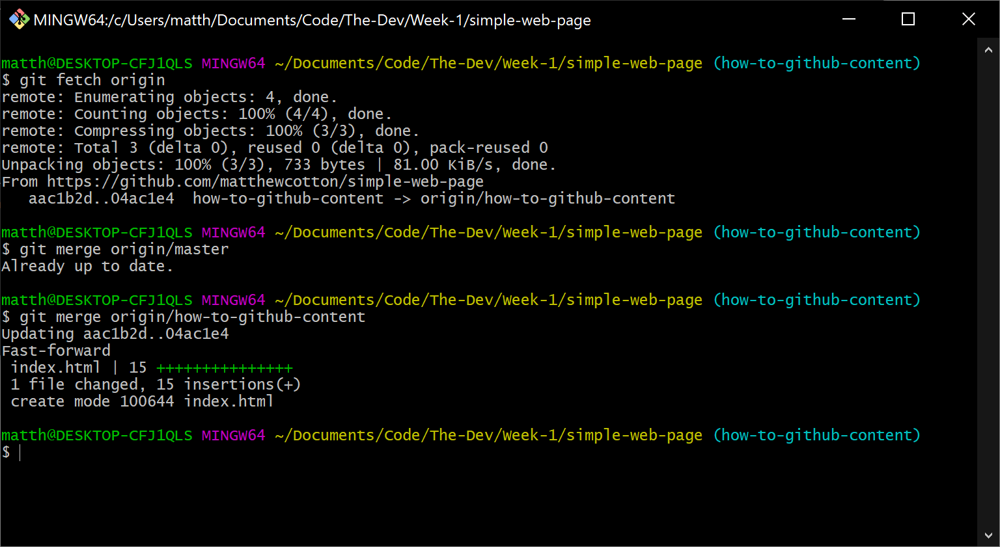
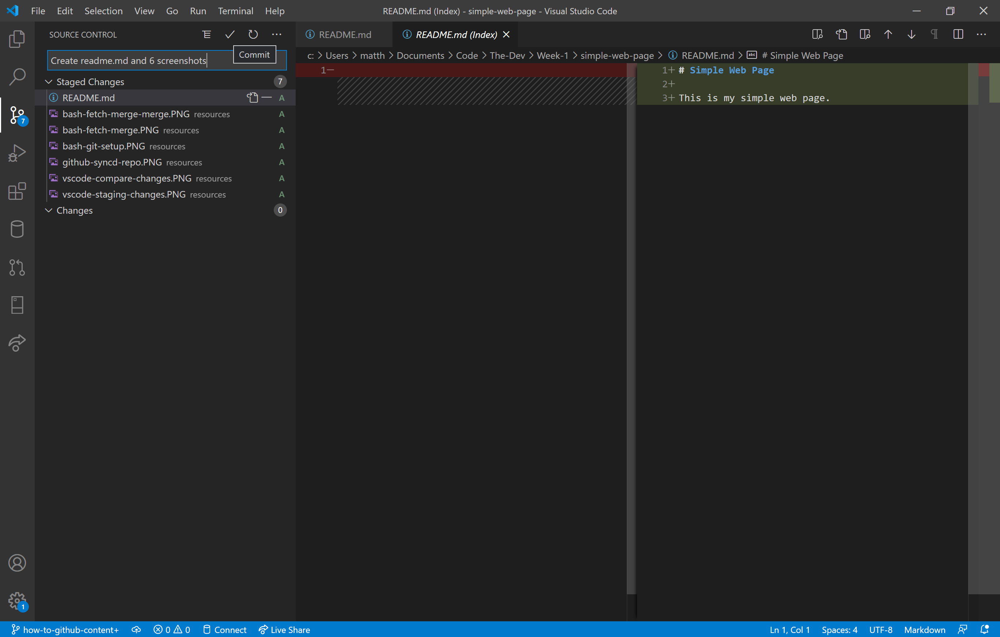

This page walks through the process of setting up a GitHub repository and committing changes.
A new GitHub repository can be setup by login into or creating a GitHub account then selecting "New".
Add a repository name and then select "Create repository". None of the check boxes need to be selected. A description can also be added.
This will create an empty repository.
The Git Bash terminal can be used to setup and link to the newly created GitHub repository. The commands shown below walk through this process step by step.
If you check the GitHub repository you will now see that the files committed and pushed are contained within the GitHub repository.
The Git Bash terminal can also be used to fetch and merge. The commands below show how this is done.
Visual Studio Code (VS Code) can be used to stage, commit and push changes to the GitHub repository.
To stage changes go to the Source Control page of VS Code and for any of the files listed under Changes click the + icon to Stage the changes. It is also possible to compare the changes. As can be seen on the right hand side of the screenshot below.
Once all of the required changes have been Staged then they can be committed. To commit changed add a commit message and then click the ✓.
Finally changes must be pushed to the GitHub repository. To do this click the three dots and select Push